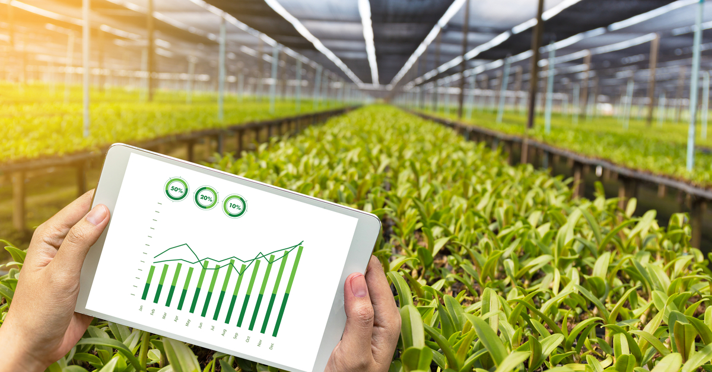

Our Company History and Mission
Our company was founded in 2010 by a group of agricultural engineers who were passionate about using technology to revolutionize the industry. Inspired by the challenges facing small farmers in developing countries, they set out to create innovative solutions that could help farmers increase their yields and improve their livelihoods. Today, our mission is to empower farmers around the world with the tools and knowledge they need to achieve sustainable, profitable agriculture.
Our Products and Services
We offer a range of products and services designed to help farmers improve their operations, from precision agriculture tools to high-quality crop seeds. Our precision agriculture tools use satellite imagery and machine learning algorithms to provide farmers with detailed information about their crops, such as moisture levels and nutrient content. Our crop seeds are carefully selected for their adaptability and yield potential, and are rigorously tested to ensure that they meet our high standards of quality and performance.

Our Sustainability Commitment
At our company, we believe that agriculture can and should be sustainable. That's why we've made it our mission to help farmers around the world implement environmentally-friendly practices that reduce their impact on the planet. From using organic and regenerative farming techniques to investing in renewable energy and minimizing waste, we're committed to promoting sustainable agriculture practices that benefit both farmers and the planet.